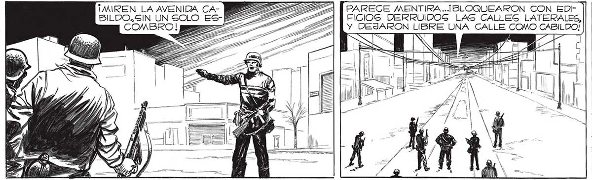
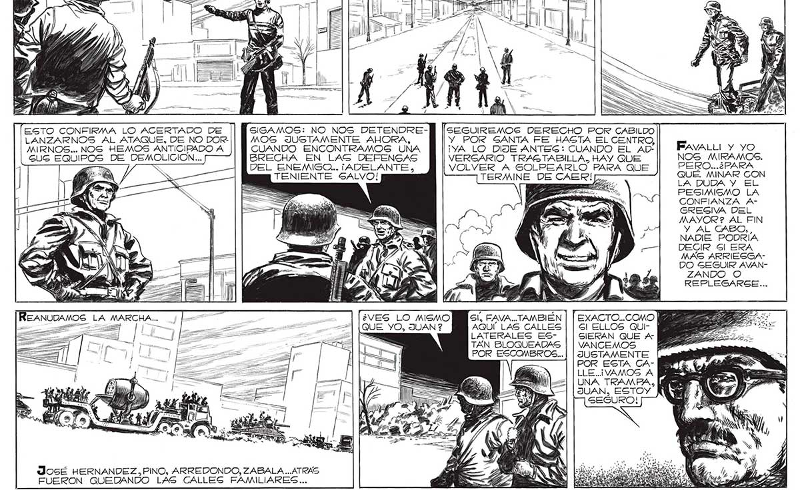

192 ¡MIREN LA AVENIDA CA- PILA [PARECE MENTIRA.. ¡BLOQUEARON CON EDI- || | E RA,SÍ, COMO PARA SORPRENBILDO,SIN UN SOLO ES-L22=2 > FICIOS DERRUIDOS LAS CALLEG LATERALES, || | DERSE. CADA VEZ ERA MAS COMBRO.! >> SS 7 EXTRAÑO, MAS INCOMPRENSIZE . - BLE, EL PROCEDER DEL INVAGOR. SIN EMBARGO,EL MAYOR TUVO UNA EXPLICACION. ESTO CONFIRMA LO ACERTADO DE SIGAMOS: NO NOS DETENDRE-” [sesuiREMOS DERECHO POR CABILDO LANZARNOS AL ATAQUE, DE NO DOR MOS JUSTAMENTE AHORA, Y POR SANTA FE HASTA EL CENTRO, MIRNOS... NOS HEMOS ANTICIPADO A CUANDO ENCONTRAMOS UNA ¡YA LO DIJE ANTEG: CUANDO EL AD- FavaLti y yO GUG EQUIPOS DE DEMOLICION... BRECHA EN LAG DEFENGAS VERGARIO TRASTABILLA. HAY QUE NOS MIRAMOS. a DEL AE E ANTES VOLVER A GOLPEARLO PARA QUE a Ei S NIEN ALVO! TERMINE DE CAER! 2. a Y El ae PESIMISMO LA CONFIANZA AGREGIVA DEL MAYOR? AL FIN Y AL CABO,, NADIE PODRÍA DECIR Sl ERA MAS ARRIEGGADO SEGUIR AVANZANDO O REPLEGARSE... PE 7" == 7 DITA e —=——— REANUDAMOS. LA MARCHA. ¿VES LO MISMO Gl, FAVA.. TAMBIEN | | EXACTO...COMO QUE YO, JUAN ? AQUI LAS CALLES Gl ELLOS QUILATERALES ES- GIERAN QUE Ar TAN BLOQUEADAS VANCEMOS 7 POR ESCOMBROS... | | JUSTAMENTE POR ESTA CALLE..¡VAMOS A UNA TRAMPA, le JUAN, ESTOY N SEGURO! N NI 4 EN », LEN A o SE eS José HERNANDEZ, PINO, ARREDONDO, ZABALA... ATRAS FUERON QUEDANDO LAS CALLES FAMILIARES...

